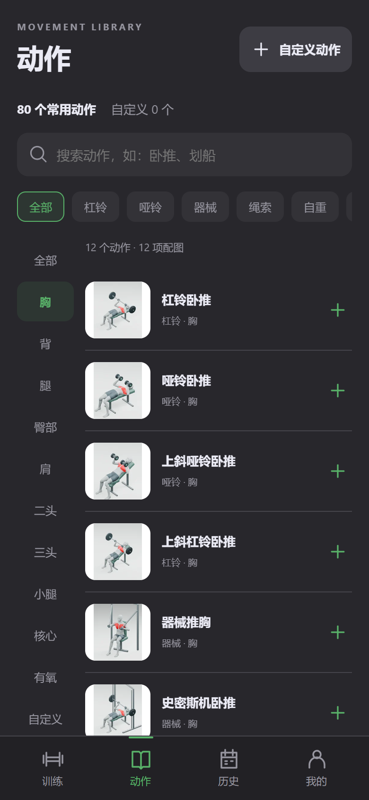
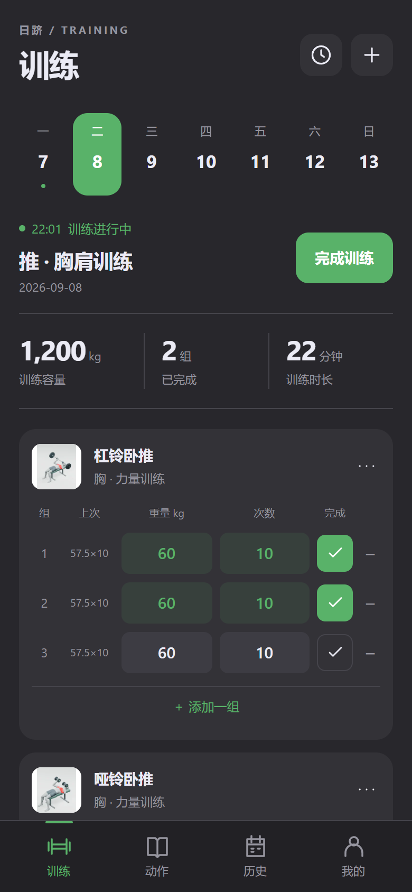
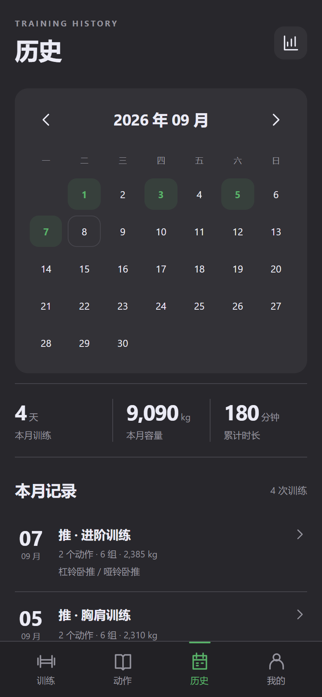

跟上你的训练节奏
普通组、热身组、递减组，逐组记录重量和次数。休息计时、上次数据与自动保存，让你更专注当下。
如月之恒，如日之升
一个专注于记录的离线训练 App
重量、次数、历史与模版，随手记下



BUILT FOR YOUR ROUTINE
记录足够简单，才更容易成为习惯。
普通组、热身组、递减组，逐组记录重量和次数。休息计时、上次数据与自动保存，让你更专注当下。
80 个常用动作，配备离线 3D 演示。把熟悉的组合存为个人模版，也能创建自己的动作。
在日历里回看训练，通过容量、部位分布与动作 PR 了解积累。身体数据和 JSON 备份由你保管。
A CLOSER LOOK
四个入口，把记录、动作、历史与个人工具放在顺手的位置。
界面预览使用虚构演示数据
LOCAL BY DESIGN
无需注册，也没有云端账号。
训练记录和身体数据保存在本机。
App 不包含广告或分析统计 SDK，不申请网络权限。通过系统文件选择器导出 JSON，即可自行保存备份。
没有云同步，卸载会删除本地数据。请定期导出备份，更新时使用同签名安装包覆盖安装。
阅读隐私说明READY WHEN YOU ARE
日跻 1.0.5 · 免费下载 · 开源代码
下载 APK最低 Android 8.0，已在 Android 16 模拟器验证；实体手机和所有旧系统仍需补充测试。请保持 Android System WebView 更新。计时器暂不提供后台或锁屏提醒音。
80 份动作动画仍待姿势复核，部分关节、握持和器械接触需要修正，仅供视觉参考。欢迎在 GitHub 提交具体问题。